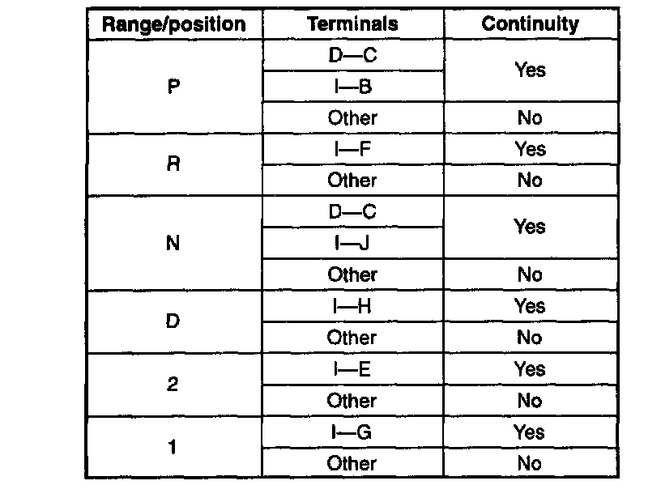

Transmission Position Sensor/Switch: Testing and Inspection
TRANSMISSION RANGE SWITCH INSPECTIONInspection Of Operation
1. Verify that the starter operates only with the ignition switch at the START position and selector lever in PIN position.
2. Verify that the back-up lights illuminate when shifted to R position with the ignition switch at the ON position.
3. If not as specified, inspect the continuity of the transmission range switch.
Inspection Of Continuity
1. Inspect the on-board diagnostic trouble code.
2. Remove the transmission range switch.

3. Inspect for continuity at the transmission range switch.
4. If not as specified, replace the transmission range switch.
5. Install the transmission range switch.